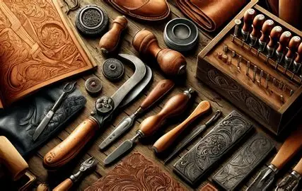

The use of animal hides dates back to prehistoric times. Leather was used for clothing, shelter, and tools.
This wasn't subject to just one civilization, every culture had their techniqies and practices for tanning and other uses. It wasn't until the Renaissance when leather went from being used for functionality to being used for fashion.
In the modern day, leatherwork has a more sustainable and ethical focus. Leather is now used in everything from high fashion and art to tech accessories and luxury goods. Although many pieces are mass produced, there is high value in artisan, handmade goods that are personalized for each customer.